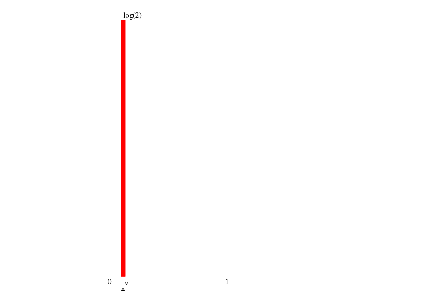

|  | ||
| maxs | mins | |
|
(1.summ) 1 |
(6.summ) 0 |
|
|
(0.summ) 0 |
(2.summ) 0 |
|
|
(3.summ) 0 |
(8.summ) 0 |
|
|
(7.summ) 0 |
(4.summ) 0 |
|
|
(11.sum) 0 |
(10.sum) 0 |
| cores_avg (cores) | mode ▵ | μ ▫ | (μ+σ)/μ | 1st alloc. max value | 1st alloc. max through ▿ | 1st alloc. min waste |
| -- 0.067 |
-- 0.234 |
-- 2.028 |
throu: 1.000 waste: 83.16%
alloc: 0.906 |
throu: 3.880 waste: 23.83%
alloc: 0.100 |
throu: 3.880 waste: 23.83%
alloc: 0.100 |